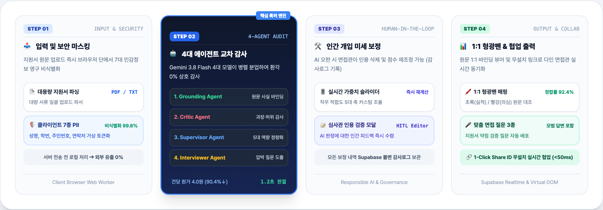
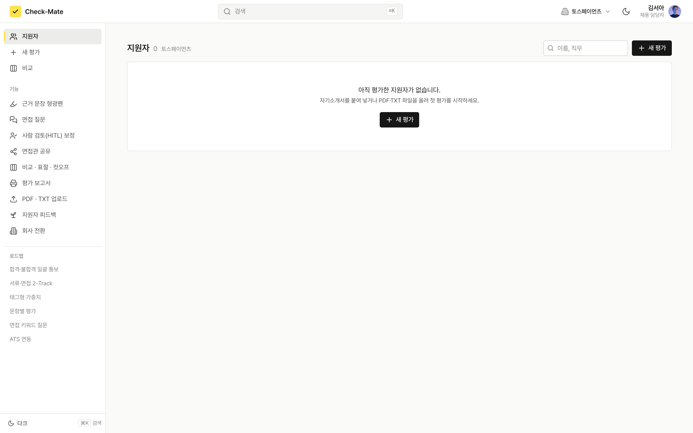
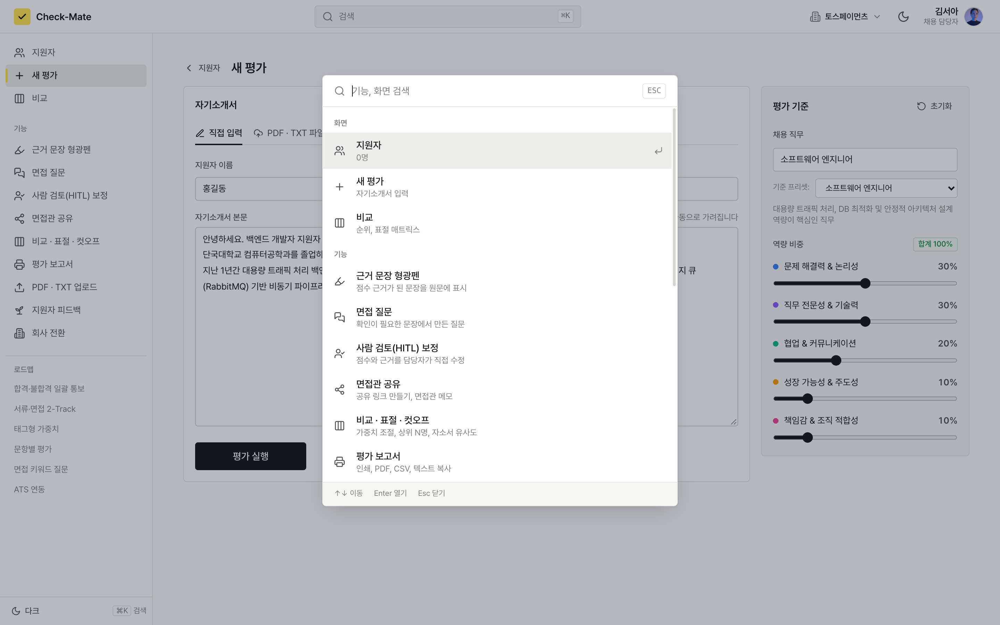

Check-Mate
B2B HR AX Copilot“소설 같은 자소서는 가라, 원문 1:1 형광펜 실시간 매칭 AI 서류 평가 & 검증 코파일럿”
Ⅰ 작품 개요 (Overview)
심사기준 1. 창의성 및 문제해결력 (25점)생성형 AI(ChatGPT 등) 보급 이후 자기소개서 품질이 상향 평준화되었으나, 프로젝트 기여도 10%를 100%로 과장하거나 허위 스펙을 기재하는 사례가 급증했습니다. 전담 HR 부서가 없는 초기 IT 스타트업은 실무 개발팀장이 서류 1건당 15분 이상 수작업 검토하느라 본업이 마비되는 심각한 병목을 겪고 있습니다.
- 개인정보 보호: 브라우저 로컬에서 이름·연락처 등 7종 PII 즉시 마스킹
- 1:1 원문 형광펜: AI 평가 리포트의 모든 주장과 원문 자소서를 1:1 줄번호 매칭
- 실전 면접 연계: 과장·허위 의심 문장을 정밀 타깃팅하는 압박 면접 질문 3종 자동 생성

Ⅱ 개발 세부 내용 (System Architecture & Engineering)
심사기준 4. 기술성/완성도 (25점)
• Web Worker 멀티스레드
• ⌘K 단축키 커맨드 팔레트
• Token Bucket 429 방어
• Anthropic API 키 은닉
• TenantContextHolder
• 지원자 CRUD & 불변 감사로그
• 4대 멀티에이전트 오케스트라
• Supabase Realtime (<50ms)

Ⅲ 구현 결과 (Implementation & User Experience)
심사기준 3. 실현 가능성 (20점) · 실서비스 라이브 배포 완료실제 서비스 5단계 사용자 여정(End-to-End) 및 실측 정량적 개선 효과

지원자 현황, 상태 배지 및 키보드 단축키로 빠른 실무 탐색

PDF/TXT 드래그앤드롭 즉시 성명·연락처 등 7종 자동 가명화

평가 문장 클릭 시 자소서 해당 줄번호로 스크롤 및 형광펜 하이라이팅

오판 인용 기각·점수 튜닝 및 과장 의심 타깃 면접 질문 3종 확보

암호화 Share ID 링크로 면접관 전원 실시간 코멘트/채점 동기화
암호화 Share ID 링크로 면접관 전원 실시간 코멘트/채점 동기화